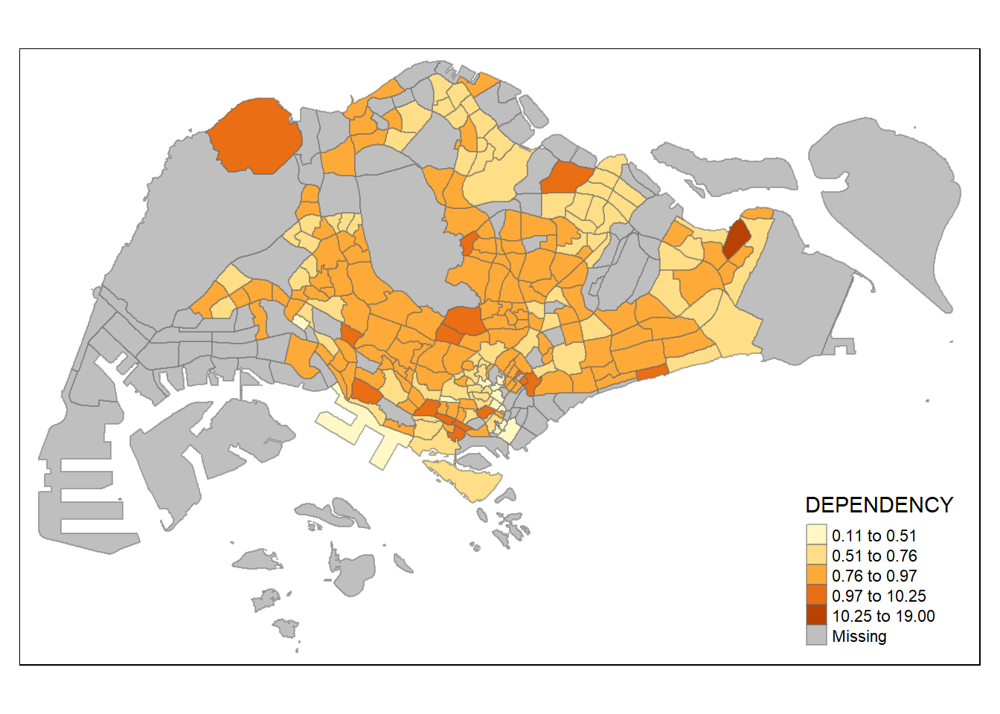
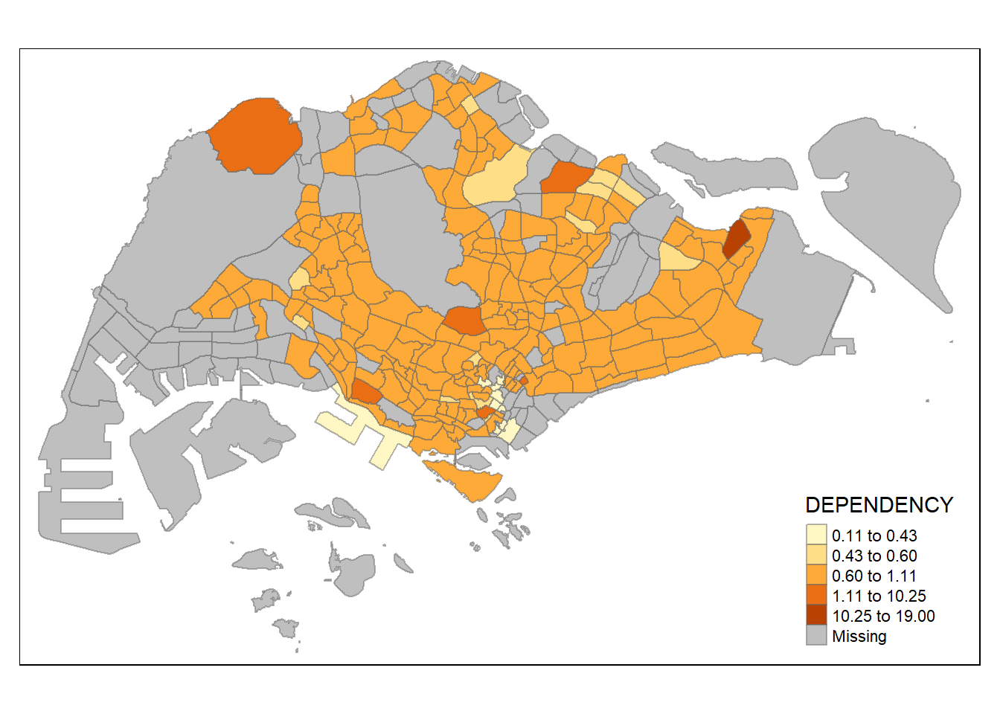

pacman::p_load(sf, tmap, tidyverse)Hands-on Exercise 2: Thematic Mapping and Geovisualisation with R
Introduction
Thematic mapping involves the use of map symbols to visualise selected properties of geographic features that are not naturally visible, such as population, temperature, crime rates and property prices.
Geovisualisation works by providing graphical ideation to render a place, phenomenon or a process.
Setting up
Data
- Master Plan 2014 Subzone Boundary (Web) from data.gov.sg
- Singapore Residents by Planning Area / Subzone, Age Group, Sex and Type of Dwelling, June 2011-2020 in csv format from [Department of Statistics, Singapore] (https://singstat.gov.sg)
Package
tmap package is used for this exercise. To install these packages in RStudio:
Importing Geospatial Data into RStudio
mpsz <- st_read(dsn = "data/geospatial",
layer = "MP14_SUBZONE_WEB_PL")Reading layer `MP14_SUBZONE_WEB_PL' from data source
`C:\guacodemoleh\IS415-GAA\Hands-on_Ex\Hands-on_Ex02\data\geospatial'
using driver `ESRI Shapefile'
Simple feature collection with 323 features and 15 fields
Geometry type: MULTIPOLYGON
Dimension: XY
Bounding box: xmin: 2667.538 ymin: 15748.72 xmax: 56396.44 ymax: 50256.33
Projected CRS: SVY21Examine the mpsz content by parsing:
mpszSimple feature collection with 323 features and 15 fields
Geometry type: MULTIPOLYGON
Dimension: XY
Bounding box: xmin: 2667.538 ymin: 15748.72 xmax: 56396.44 ymax: 50256.33
Projected CRS: SVY21
First 10 features:
OBJECTID SUBZONE_NO SUBZONE_N SUBZONE_C CA_IND PLN_AREA_N
1 1 1 MARINA SOUTH MSSZ01 Y MARINA SOUTH
2 2 1 PEARL'S HILL OTSZ01 Y OUTRAM
3 3 3 BOAT QUAY SRSZ03 Y SINGAPORE RIVER
4 4 8 HENDERSON HILL BMSZ08 N BUKIT MERAH
5 5 3 REDHILL BMSZ03 N BUKIT MERAH
6 6 7 ALEXANDRA HILL BMSZ07 N BUKIT MERAH
7 7 9 BUKIT HO SWEE BMSZ09 N BUKIT MERAH
8 8 2 CLARKE QUAY SRSZ02 Y SINGAPORE RIVER
9 9 13 PASIR PANJANG 1 QTSZ13 N QUEENSTOWN
10 10 7 QUEENSWAY QTSZ07 N QUEENSTOWN
PLN_AREA_C REGION_N REGION_C INC_CRC FMEL_UPD_D X_ADDR
1 MS CENTRAL REGION CR 5ED7EB253F99252E 2014-12-05 31595.84
2 OT CENTRAL REGION CR 8C7149B9EB32EEFC 2014-12-05 28679.06
3 SR CENTRAL REGION CR C35FEFF02B13E0E5 2014-12-05 29654.96
4 BM CENTRAL REGION CR 3775D82C5DDBEFBD 2014-12-05 26782.83
5 BM CENTRAL REGION CR 85D9ABEF0A40678F 2014-12-05 26201.96
6 BM CENTRAL REGION CR 9D286521EF5E3B59 2014-12-05 25358.82
7 BM CENTRAL REGION CR 7839A8577144EFE2 2014-12-05 27680.06
8 SR CENTRAL REGION CR 48661DC0FBA09F7A 2014-12-05 29253.21
9 QT CENTRAL REGION CR 1F721290C421BFAB 2014-12-05 22077.34
10 QT CENTRAL REGION CR 3580D2AFFBEE914C 2014-12-05 24168.31
Y_ADDR SHAPE_Leng SHAPE_Area geometry
1 29220.19 5267.381 1630379.3 MULTIPOLYGON (((31495.56 30...
2 29782.05 3506.107 559816.2 MULTIPOLYGON (((29092.28 30...
3 29974.66 1740.926 160807.5 MULTIPOLYGON (((29932.33 29...
4 29933.77 3313.625 595428.9 MULTIPOLYGON (((27131.28 30...
5 30005.70 2825.594 387429.4 MULTIPOLYGON (((26451.03 30...
6 29991.38 4428.913 1030378.8 MULTIPOLYGON (((25899.7 297...
7 30230.86 3275.312 551732.0 MULTIPOLYGON (((27746.95 30...
8 30222.86 2208.619 290184.7 MULTIPOLYGON (((29351.26 29...
9 29893.78 6571.323 1084792.3 MULTIPOLYGON (((20996.49 30...
10 30104.18 3454.239 631644.3 MULTIPOLYGON (((24472.11 29...Importing Attribute Data into RStudio
After downloading the respopagessex2011to2020.csv file, save the file into an R dataframe, popdata.
Access the csv file using read_csv() in the readr package:
popdata <- read_csv("data/aspatial/respopagesextod2011to2020.csv")
show_col_types = FALSEData preparation
Focusing on year 2020, prepare a data table.It should include variables PA, SZ, YOUNG, ECONOMY ACTIVE, AGED, TOTAL, DEPENDENCY.
YOUNG: age group 0 to 4 until age group 20 to 24
ECONOMY ACTIVE: age group 25-29 until age group 60-64
AGED: age group 65 and above
TOTAL: all age groups, and
DEPENDENCY: the ratio between young and aged against economy active group.
Data wrangling
These are the following wrangling and transformation functions that will be used: - pivot_wider() from tidyr package - mutate(), filter(), group_by() and select() from dplyr package
Note: Added additional argument, .groups, in the summarise() function. Error occurred initially.
popdata2020 <- popdata %>%
filter(Time == 2020) %>%
group_by(PA, SZ, AG) %>%
summarise(`POP` = sum(`Pop`), .groups = "drop") %>%
ungroup() %>%
pivot_wider(names_from=AG,
values_from=POP) %>%
mutate(YOUNG = rowSums(.[3:6])
+rowSums(.[12])) %>%
mutate(`ECONOMY ACTIVE` = rowSums(.[7:11])+
rowSums(.[13:15]))%>%
mutate(`AGED`=rowSums(.[16:21])) %>%
mutate(`TOTAL`=rowSums(.[3:21])) %>%
mutate(`DEPENDENCY` = (`YOUNG` + `AGED`)
/`ECONOMY ACTIVE`) %>%
select(`PA`, `SZ`, `YOUNG`,
`ECONOMY ACTIVE`, `AGED`,
`TOTAL`, `DEPENDENCY`)Joining attribute data and geospatial data
Before performing the georelational join, the values in the PA and SZ fields need an uppercase conversion. The SUBZONE_N and PLN_AREA_N are already in uppercase.
popdata2020 <- popdata2020 %>%
mutate_at(.vars = vars(PA, SZ),
.funs = list(toupper)) %>%
filter(`ECONOMY ACTIVE` > 0)Next, left_join() of dplyr is used to join the geographical data and attribute table using planning subzone name e.g. SUBZONE_N and SZ as the common identifier.
mpsz_pop2020 <- left_join(mpsz, popdata2020,
by = c("SUBZONE_N" = "SZ"))- The left_join() from dplyr package is used with
mpszsimple feature data frame as the left data table is to ensure that the output will be a simple feature dataframe.
Save the changes.
write_rds(mpsz_pop2020, "data/rds/mpszpop2020.rds")- RDS files take less space than textual data formats like CSV, JSON. Further, RDS also reads and writes faster than those.
Choropleth Mapping Geospatial Data Using tmap
Choropleth mapping is the symbolisation of enumeration units, including countries, provinces, states, or census units. This involves the use of area patterns or graduated colours.
Scenario A social scientist may need to use a choropleth map to portray the spatial distribution of aged population of Singapore w.r.t the Master Plan 2014 Subzone Boundary.
There are two approaches to prepare thematic maps using tmap: 1. Plotting a quick thematic map using qtm() 2. Plotting a customisable thematic map using tmap elements
Method 1: Plotting a quick choropleth map using qtm()
tmap_mode("plot")
qtm(mpsz_pop2020,
fill = "DEPENDENCY")
- tmap_mode() with “plot” option is used to produce a static map. For interactive mode, “view” option should be used.
- fill argument is used to map the attribute (i.e. DEPENDENCY)
Method 2: Creating a choropleth map using tmap’s elements
tm_shape(mpsz_pop2020)+
tm_fill("DEPENDENCY",
style = "quantile",
palette = "Blues",
title = "Dependency ratio") +
tm_layout(main.title = "Distribution of Dependency Ratio by planning subzone",
main.title.position = "center",
main.title.size = 1.2,
legend.height = 0.45,
legend.width = 0.35,
frame = TRUE) +
tm_borders(alpha = 0.5) +
tm_compass(type="8star", size = 2) +
tm_scale_bar() +
tm_grid(alpha =0.2) +
tm_credits("Source: Planning Sub-zone boundary from Urban Redevelopment Authorithy (URA)\n and Population data from Department of Statistics DOS",
position = c("left", "bottom"))
The following subsection explains the tmap functions used to plot these elements.
Drawing a base map
The basic building block of tmap is tm_shape followed by one or more layer elements such as tm_fill() or tm_polygons().
tm_shape() is used to define the input data mpsz_pop2020 and tm_polygons() is used to draw the planning subzone polygons
tm_shape(mpsz_pop2020) + tm_polygons()
Drawing a choropleth map using tm_polygons()
tm_shape(mpsz_pop2020) + tm_polygons("DEPENDENCY")
- The default interval bin is called “pretty”. A detailed discussion of the classification methods supported by tmap will be provided in a later sub-section.
- The default colour scheme used is
YlOrRdof ColorBrewer. More about the colour scheme can be learnt in a later section.
Drawing a choropleth map using tm_fill() and tm_border()
tm_polygons() is a wrapper of tm_fill() and tm_border(). tm_fill() shades the polygons using the default colour scheme and tm_borders() adds the borders of the shapefile onto the choropleth map.
Draw the choropleth map using tm_fill() alone,
tm_shape(mpsz_pop2020)+
tm_fill("DEPENDENCY")
- The planning subzones are shared according to the respective dependency values.
tm_boarders() is used to draw up the boundaries of the subzones:
tm_shape(mpsz_pop2020)+
tm_fill("DEPENDENCY") +
tm_borders(lwd = 0.1, alpha = 1)
The alpha argument is used to define transparency number between 0 (totally transparent) and 1 (not transparent). By default, the alpha value of the col is used (normally 1).
Beside alpha argument, there are three other arguments for tm_borders(), they are:
- col = border colour,
- lwd = border line width. The default is 1, and
- lty = border line type. The default is “solid”.
Data classification methods of tmap
Classification helps to group a large number of observations into data ranges or classes.
tmap provides a total of ten data classification methods (i.e. fixed, sd, equal, pretty (default), quantile, kmeans, hclust, bclust, fisher, jenks).
To define a data classification method, the style argument of tm_fill() or tm_polygons() will be used.
Plotting choropleth maps with built-in classification
Within the tm_fill() argument, the number of classes can be customised. First we will use the jenks method, which is also known as natural breaks, is based on natural groupings inherent in the data. Data is clustered into groups that minimise the within-group variance and maximises the between-group variance.
The following code chunk depicts a quantile data classification that uses 5 classes.
jenks
tm_shape(mpsz_pop2020)+
tm_fill("DEPENDENCY",
n=5,
style="jenks") +
tm_borders(alpha=0.5)
equal
Next, we will try the equal data classification method.
tm_shape(mpsz_pop2020)+
tm_fill("DEPENDENCY",
n=5,
style="equal") +
tm_borders(alpha=0.5)
- The distribution of quantile data classification is more evenly distributed than the equal data classification method.
tmap actually has 10 data classification methods: - jenks (or natural breaks as mentioned) - equal (as mentioned) - fixed - sd - pretty (default) - quantile - kmeans - fisher - hclust - bclust
Looking closer at… #### sd
tm_shape(mpsz_pop2020)+
tm_fill("DEPENDENCY",
n=5,
style="sd") +
tm_borders(alpha=0.5)
kmeans
tm_shape(mpsz_pop2020)+
tm_fill("DEPENDENCY",
n=5,
style="kmeans") +
tm_borders(alpha=0.5)
tm_shape(mpsz_pop2020)+
tm_fill("DEPENDENCY",
n=10,
style="kmeans") +
tm_borders(alpha=0.5)fisher
tm_shape(mpsz_pop2020)+
tm_fill("DEPENDENCY",
n=5,
style="fisher") +
tm_borders(alpha=0.5)
- At a glance, using Fisher and KMeans lead to similar visualisations.
hclust
hclust is hierarchical clustering. It is a method aiming to create a hierarchy of clusters based on their similarity. Each data point starts as an individual cluster and then progressively merges or splits clusters until a stopping criterion is met.
tm_shape(mpsz_pop2020)+
tm_fill("DEPENDENCY",
n=5,
style="hclust") +
tm_borders(alpha=0.5)
tm_shape(mpsz_pop2020)+
tm_fill("DEPENDENCY",
n=20,
style="hclust") +
tm_borders(alpha=0.5)bclust
bclust is bagged clustering which creates multiple subsets of the original dataset through resampling. Each subset is then used to train an individual clustering model, and the final cluster assignments are obtained by combining the results from all models.
tm_shape(mpsz_pop2020)+
tm_fill("DEPENDENCY",
n=5,
style="bclust") +
tm_borders(alpha=0.5)
Committee Member: 1(1) 2(1) 3(1) 4(1) 5(1) 6(1) 7(1) 8(1) 9(1) 10(1)
Computing Hierarchical Clusteringtm_shape(mpsz_pop2020)+
tm_fill("DEPENDENCY",
n=4,
style="bclust") +
tm_borders(alpha=0.5)Committee Member: 1(1) 2(1) 3(1) 4(1) 5(1) 6(1) 7(1) 8(1) 9(1) 10(1)
Computing Hierarchical Clustering
### Plotting choropleth maps with custom breaks
Breakpoints can be set explicitly to override the default category breaks. This can be done with the help of the *breaks* argument in *tm_fill()*. For n categories, n+1 elements must be included in the *breaks*.
Get descriptive statistics before setting the break points.
::: {.cell}
```{.r .cell-code}
summary(mpsz_pop2020$DEPENDENCY) Min. 1st Qu. Median Mean 3rd Qu. Max. NA's
0.1111 0.7147 0.7866 0.8585 0.8763 19.0000 92 :::
Looking at the summary statistics, the break point can be set to 0.60, 0.70, 0.80, and 0.90. The minimum and maximum breaks must also be included, which are 0 adn 100 respectively. These would translate to the breaks vector, c(0, 0.60, 0.70, 0.80, 0.90, 1.00).
tm_shape(mpsz_pop2020)+
tm_fill("DEPENDENCY",
breaks = c(0, 0.60, 0.70, 0.80, 0.90, 1.00)) +
tm_borders(alpha = 0.5)
Colour Scheme
tmap also supports colour ramps. They can be defined by the analyst or preselected from the RColorBrewer package.
ColorBrewer palette
The colour of the choropleth map can be reassigned to a colour of our preference. Simply add the palette argument into tm_fill as shown in the code chunk below.
tm_shape(mpsz_pop2020)+
tm_fill("DEPENDENCY",
n = 6,
style = "quantile",
palette = "Blues") +
tm_borders(alpha = 0.5)
To reverse the colour shading, add a “-” prefix.
tm_shape(mpsz_pop2020)+
tm_fill("DEPENDENCY",
style = "quantile",
palette = "-Greens") +
tm_borders(alpha = 0.5)
- The colour scheme has been reversed as depicted by the decreasing colour intensity in the legend.
Map Layouts
Map layout refers to the combination of all map elements into a comprehensive map. In maps, it is crucial to include their elements – title, scale bar, compass, margins and aspect ratios.
Map Legend
In tmap, the legend options can be customised to change the placement, format and its appearance.
tm_shape(mpsz_pop2020)+
tm_fill("DEPENDENCY",
style = "jenks",
palette = "Blues",
legend.hist = TRUE,
legend.is.portrait = TRUE,
legend.hist.z = 0.1) +
tm_layout(main.title = "Distribution of Dependency Ratio by planning subzone \n(Jenks classification)",
main.title.position = "center",
main.title.size = 1,
legend.height = 0.45,
legend.width = 0.35,
legend.outside = FALSE,
legend.position = c("right", "bottom"),
frame = FALSE) +
tm_borders(alpha = 0.5)
Map Style
The layout of the map can also be adjusted using tmap_style().
Classic
tm_shape(mpsz_pop2020)+
tm_fill("DEPENDENCY",
style = "quantile",
palette = "-Greens") +
tm_borders(alpha = 0.5) +
tmap_style("classic")
Cartographic Furniture
tmap also provides arguments to draw other important map elements like compass, scale bar and grid lines.
To add compass, scale and gridlines, pay attention to how tm_compass(), tm_scale_bar() and tm_grid() are used.
tm_shape(mpsz_pop2020)+
tm_fill("DEPENDENCY",
style = "quantile",
palette = "Blues",
title = "No. of persons") +
tm_layout(main.title = "Distribution of Dependency Ratio \n by Planning Subzone",
main.title.position = "center",
main.title.size = 1.2,
legend.height = 0.45,
legend.width = 0.35,
frame = TRUE) +
tm_borders(alpha = 0.5) +
tm_compass(type="8star", size = 2) +
tm_scale_bar(width = 0.15) +
tm_grid(lwd = 0.1, alpha = 0.2) +
tm_credits("Source: Planning Sub-zone boundary from Urban Redevelopment Authority (URA)\n and Population data from Department of Statistics DOS",
position = c("left", "bottom"))Drawing Small Multiple Choropleth Maps
Small multiple maps, also referred as facet maps, comprise of many adjacent maps. These facets enable easier visualisation of how spatial relationships change with respect to another variable such as time.
In tmap, small multiple maps can be plotted in three ways: 1. Assigning multiple values to at least one of the aesthetic arguments 2. Defining a group-by variable in tm_facets(), and 3. Creating multiple stand-alone maps with tmap_arrange()
Assigning multiple values to at least one of the aesthetic arguments
Small multiple choropleth maps can be created by defining the number of columns, ncols, in tm_fill().
tm_shape(mpsz_pop2020)+
tm_fill(c("YOUNG", "AGED"),
style = "equal",
palette = "Blues") +
tm_layout(legend.position = c("right", "bottom")) +
tm_borders(alpha = 0.5) +
tmap_style("white")
Multiple values can be assigned to aesthetic arguments like style and palette. The visual output of the maps will be according to the corresponding order of the argument values.
tm_shape(mpsz_pop2020)+
tm_polygons(c("DEPENDENCY","AGED"),
style = c("equal", "quantile"),
palette = list("Blues","Greens")) +
tm_layout(legend.position = c("right", "bottom"))
Defining a group-by variable in tm_facets()
tm_facets() can help to group categorical data like regions and subzone areas such that the generated facet maps will zoom in to the specified variable.
tm_shape(mpsz_pop2020) +
tm_fill("DEPENDENCY",
style = "quantile",
palette = "Blues",
thres.poly = 0) +
tm_facets(by="REGION_N",
free.coords=TRUE,
drop.shapes=TRUE) +
tm_layout(legend.show = FALSE,
title.position = c("center", "center"),
title.size = 20) +
tm_borders(alpha = 0.5)
Creating multiple stand-alone maps with tmap_arrange()
The order of the maps can be reorganised by assigning each map to a unique variable then ordering the variables using tmap_arrange().
youngmap <- tm_shape(mpsz_pop2020)+
tm_polygons("YOUNG",
style = "quantile",
palette = "Blues")
agedmap <- tm_shape(mpsz_pop2020)+
tm_polygons("AGED",
style = "quantile",
palette = "Blues")
tmap_arrange(youngmap, agedmap, asp=1, ncol=2)
- asp refers to th aspect ratio of the maps. Its default value is 0.
Mapping Spatial Objects Meeting a Selection Criterion
Map outputs can be targeted by using selection functions to meet the selection criterion
tm_shape(mpsz_pop2020[mpsz_pop2020$REGION_N=="CENTRAL REGION", ])+
tm_fill("DEPENDENCY",
style = "quantile",
palette = "Blues",
legend.hist = TRUE,
legend.is.portrait = TRUE,
legend.hist.z = 0.1) +
tm_layout(legend.outside = TRUE,
legend.height = 0.45,
legend.width = 5.0,
legend.position = c("right", "bottom"),
frame = FALSE) +
tm_borders(alpha = 0.5)